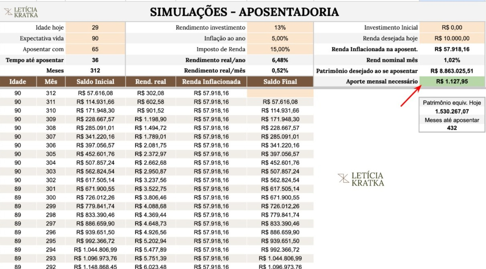

01
Ferramentas prontas
Que fazem o trabalho duro por você. Tudo já vem montado, é só preencher.
Porque ninguém nunca te ensinou a transformar renda em plano.
Você ganha bem. Tem alguma coisa guardada. Mas no fundo sente que devia estar muito mais à frente do que você está.
Existe uma ordem que ninguém te ensinou: enxergar, sobrar, dar nome, render. E ela tem etapas claras.


Olha só uma coisa
Saber onde investir. Multiplicar o patrimônio. Parar de ver a poupança comendo o seu dinheiro pela inflação. Parar de seguir palpite de gerente. Faz total sentido querer isso. E dá. Mas tem uma pergunta antes que ninguém te fez.
Render quanto? Em quanto tempo? Pra qual objetivo da sua vida?
Sem essa resposta, você até consegue investir. Mas não consegue saber se tá fazendo o melhor.
Aí você fica:
Investir sem saber pra quê é o que te mantém travado.
Não é falta de informação sobre investimento. É falta de critério.
Você ganha bem. R$ 7 mil. R$ 12 mil. R$ 30 mil por mês. Paga tudo em dia. Tem alguma coisa guardada. E ainda assim sente que devia estar muito mais à frente do que está.
Você se reconhece em alguma dessas?
Se sim, segue lendo. É exatamente disso que a gente vai falar.
"Ganho bem, mas tenho a sensação que o dinheiro evapora."
"Tive aumentos seguidos, mas continuo sempre na mesma."
"Recebendo o dobro do que recebia antes, e sinto que guardo o mesmo tanto."
Seu patrimônio não cresce no ritmo da sua renda.
Cada vez que sua renda sobe, seu padrão de vida sobe junto. Tem alguma coisa guardada, mas é pouco pra quem ganha o que você ganha. Você sabe disso. Você não faz isso de propósito.
Só nunca parou pra decidir, com clareza, o que aquele dinheiro tinha que construir.
Daí se compara com gente que ganha menos e parece estar mais à frente. Tenta planilha, abandona em 15 dias. Tenta app, ele vira enfeite no celular. Faz curso de finanças, segue conteúdo, mas nada vira prática.
E o ciclo continua. Ganha mais, gasta mais, padrão sobe junto, patrimônio fica pra trás.
É isso. Vida financeira travada.
A Adrielly virou essa chave. Olha o que ela me mandou:

A clareza que tivemos das nossas contas mudou tudo. Finalizamos o controle de gastos, fizemos os cortes e iniciamos a reserva de emergência no mesmo mês.
É falta de uma ordem que transforme o que você quer em números, prazos e etapas claras.
Sem isso, qualquer decisão financeira vira dúvida. Você pensa em viajar e não sabe se pode. Pensa em trocar de carro e não sabe se compromete o resto. Pensa na aposentadoria e não faz ideia de quando consegue. Pensa em investir e não sabe pra qual objetivo aquele dinheiro tá indo.
Não é uma decisão. São centenas, todo mês. Sem critério, isso desgasta. Cansa.
Primeiro você enxerga pra onde o dinheiro tá indo. Depois faz sobrar. Aí dá nome pra cada parte da sobra. Só então faz render.
Cada etapa precisa da anterior pra acontecer. Não dá pra investir bem antes de saber pra quê. Não dá pra saber pra quê antes de ter o dinheiro nomeado pelos seus objetivos. Não dá pra ter sobra antes de enxergar onde ela tá vazando.
A planilha não é o método. A planilha é uma das ferramentas. O que faz tudo funcionar é o método em volta dela.
Quando você inverte essa ordem:
O resultado é sempre o mesmo: ou frustração, ou lentidão.
Porque não é sobre fazer mais. É sobre fazer na sequência certa.
São quatro passos. Cada um destrava o próximo.
Você cola seus extratos e categoriza na ferramenta. Em uma tela só, você vê onde cada real foi parar, sem achismo, sem precisar virar especialista em planilha, e também descobre a prioridade de cada gasto. Confia: você cai pra trás quando bate o olho nos gastos que tavam te sangrando sem você perceber.
Pra cada área da sua vida (mercado, casa, roupas, lazer), você descobre quanto deveria estar gastando sem sufocar seu padrão e ainda fazer sobrar dinheiro. Você para de adivinhar, e de tirar da própria cabeça quanto "deveria" ser.


Reserva de emergência, aposentadoria, casa própria, viagem dos sonhos, faculdade dos filhos. Cada um vira um valor mensal claro pra guardar, e você para de empurrar tudo pra "um dia eu vejo isso".
A sobra que apareceu vai começar a render! Pra cada objetivo, um investimento diferente. Reserva pede segurança. Aposentadoria pede longo prazo. E você vai ter segurança pra fazer cada investimento porque as aulas te ensinam qual é qual. Sem assustar com Selic e CDI. Tudo traduzido com analogia do dia a dia.

Foi esse passo a passo simples que a Maiara fez. E conseguiu isso aqui:

Segundo mês consecutivo com sobra pra investir. E ainda tô vivendo.
Todas as ferramentas vêm prontas. Você não precisa pensar em método, só preencher, tipo ctrl C + ctrl V.
O caminho vem mastigado: todas as etapas têm aulas curtas explicando o porquê e como fazer, e a ferramenta automática faz o trabalho duro e te entrega o passo certo pra sua vida, porque você passa a decidir sabendo exatamente o impacto de cada escolha.
Você aprende a fazer seu dinheiro render sem grandes riscos. Sem se enrolar, sem ser irresponsável, porque você só investe quando sabe por que, quanto e por quanto tempo.
Que fazem o trabalho duro por você. Tudo já vem montado, é só preencher.

Vídeos rápidos e diretos pra cada passo do método. Você assiste enquanto preenche a ferramenta.
Grupo de WhatsApp com outros alunos vivendo os mesmos desafios e conquistas que você. Aulas a cada 15 dias ao vivo comigo pra tirar dúvidas.
Você acessa a aula, faz a atividade que ela propõe, preenche as decisões no Mapa da Travessia, e segue pra próxima.
Uma de cada vez. No seu tempo. No seu ritmo.
Tudo já vem montado. Você só preenche, e a ferramenta te entrega o próximo passo. Estas são as três principais. Mais o simulador que faz a conta que ninguém faz e todo mundo precisa.
O cérebro da estratégia.
É um painel de controle pra registrar todas as metas e decisões que for construindo ao longo da travessia. Ele é o cérebro da sua estratégia.
Pra onde foi cada real, sem você fazer conta.
Cola os extratos do banco e dos cartões. A ferramenta categoriza tudo (com IA, ou na mão, como você preferir) e te mostra limite saudável por área da sua vida, e onde dá pra apertar sem cortar nada que importa.
Cada sonho vira um valor mensal claro.
"Quero comprar uma casa" vira "R$ 4.200 por mês durante 36 meses, em Tesouro Prefixado". Reserva de emergência, aposentadoria, viagem, faculdade dos filhos: cada um com prazo e plano de investimento. Você acompanha o progresso de cada um.
A conta que ninguém faz. Que muda tudo.
Quando você quer parar de trabalhar? Quanto precisa juntar pra ter essa liberdade? Quanto investir por mês a partir de hoje pra chegar lá? E se começar daqui a 3 anos? A ferramenta mostra todos os cenários que você quiser simular.
Você coloca sua idade, quando quer se aposentar, sua renda e quanto já tem guardado. E pronto: ela te diz quanto precisa investir por mês pra chegar lá!

Tudo entregue pronto, com aula curta ensinando como usar cada uma. Você não precisa construir nada, só preencher.
Sabe o que a galera acha dessas ferramentas? Isso aqui:

As ferramentas são perfeitas. Amando os resultados e a nova mentalidade.
Nesse encontro você tira dúvidas comigo, vê casos reais de aluno sendo destrinchados na hora, e se aprofunda em algo que muda como você decide com dinheiro.
Ambiente fechado pra você ver o que tá funcionando na vida financeira dos outros, compartilhar o seu, e perguntar direto pra comunidade ou pra mim, sempre que travar.
Mas Letícia, e se eu já tiver algumas dívidas?
Pra isso, tem a trilha de Quitação de Dívidas.
Ela vai te mostrar qual dívida pagar primeiro, quais renegociar, quando vale amortizar e quando vale mais investir. Sem virar mártir, sem cortar tudo da vida, e com a ferramenta calculando a ordem ideal pra você.
E se você é autônomo ou PJ, você também vai precisar organizar as finanças do seu negócio, e separar a PJ da PF.
Como separar o dinheiro da empresa do pessoal, definir uma retirada viável pra você, montar reserva da empresa e parar de misturar as contas. O erro número um de quem tem renda variável, com plano pronto pra resolver.
Essas 2 trilhas também tão dentro do Travessia.


De endividada a investidora em 12 meses.
Entrou com a conta não fechando nem na empresa nem em casa. Em 12 meses: quitou R$ 12 mil de dívida, formou R$ 20 mil de reserva, fez manutenção da casa à vista e ainda viajou com a família.

Reserva de emergência concluída, juntos.
Casal que entrou no método pra organizar as contas e fechou a reserva de emergência antes do prazo. Agora rodando os próximos objetivos.
Saiu sem clareza de metas e começou a investir.
Entrou sem ter claro quais eram as próprias metas a curto e médio prazo, nem como administrar tudo sem afetar a aposentadoria. Hoje tem rotina, metas guiadas, e começou o aprendizado em investimentos, sem que virasse "bicho de sete cabeças".

Aplicou o método sozinha.
Sem consultoria individual, sem reunião comigo. Só com as ferramentas e as aulas, tá rodando o sistema completo de finanças da família no próprio ritmo.
O método não é sobre apertar, é sobre direcionar. Quem tem orçamento proativo gasta com tranquilidade nas categorias que escolheu, justamente porque sabe que tem teto definido e sobra acontecendo. Quem aperta é quem não tem clareza, e por insegurança vai cortando aqui e ali sem critério.
Você pode gastar com leveza, sem culpa, quando sabe que o resto tá funcionando.
A ferramenta faz metade do trabalho. Você não precisa ter força de vontade pra preencher planilha do zero, calcular percentuais, lembrar de cada categoria. A ferramenta já vem pronta, com a lógica do método embutida, e a comunidade ao vivo segura o ritmo.
Não é falta de disciplina. É falta de método com ferramenta certa. Você sabe lidar com dinheiro. Só nunca te ensinaram a ordem.
Porque disciplina sem método não se sustenta, você depende de esforço constante. Método com ferramenta reduz decisão. E quando você reduz decisão, você reduz erro.
Planilha sem método é só registro. Você abandona porque não vê resultado, e não vê resultado porque a planilha sozinha não diz se você tá no caminho certo. O método mostra o que fazer com aquele número, e a ferramenta faz a leitura por você.
Não é quando você ganhar mais que resolve. É agora, com a renda que você já tem. Quem já passou de R$ 5 mil pra R$ 12 mil sem destravar, não vai destravar passando de R$ 12 mil pra R$ 25 mil. O padrão de vida sobe junto. O destrave é na ordem.
Método completo, ferramentas prontas e acompanhamento ao vivo por 12 meses. Tudo entregue no primeiro dia, no seu ritmo.
Comecei atendendo uma família por vez, em consultoria individual. Em 6 anos, foram mais de 200 famílias acompanhadas direto, mais de R$ 10 milhões em evolução de patrimônio gerada pelos alunos, e mais de 3.000 pessoas passaram pelos cursos online.
Em 2025, fui escolhida entre os Top 50 Influenciadores Financeiros do Brasil pelo InfoMoney. Formada em Administração pela UnB.
Faça o passo 1 do método, o diagnóstico, nos primeiros 7 dias. Se no fim desses 7 dias você ainda não tiver mais clareza do seu dinheiro do que conseguiu em qualquer tentativa anterior (planilha, app, curso, conversa com gerente, qualquer coisa), você me escreve e eu devolvo 100% do valor.
Sem perguntas constrangedoras.
O risco é todo meu. Você só sai ganhando.
Você ainda tem alguma dúvida específica que gostaria de tirar? Chama aqui a Je, especialista do meu time, que ela vai te ajudar.
Não porque você fez tudo errado. Mas porque ninguém nunca te mostrou como fazer o dinheiro trabalhar a seu favor, e não só acompanhar a sua vida.
A travessia começa hoje. Ou não começa.
Quero ver pra onde meu dinheiro tá indo